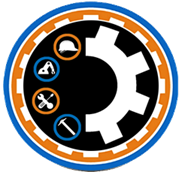

Módulo de Formación en Centros de Trabajo (MFCT):
El Módulo de formación en Centros de Trabajo (MFCT),
es un bloque coherente de formación
específica, constituido por un conjunto
de resultados de aprendizaje y unos criterios de
evaluación que orientan la realización de las actividades formativas de los alumnos en el
centro de trabajo, en el mismo se establece un proceso de aprendizaje, basado en una
formación eminentemente práctica, ubicada en un entorno productivo, donde el estudiante
puede desempeñar las actividades propias de su profesión y adquirir una competencia
profesional, regulada por el currículo en la ordenanza de cada familia profesional.
Se trata de:
● Generar procesos de aprendizaje en el contexto que aseguren el desarrollo de
competencias pertinentes.
● Aportar a los estudiantes una experiencia profesional válida para su currículum
e interesante para el centro de trabajo.
● Avanzar en la cooperación entre los centros educativos y las empresas
habilitando un proceso de retroalimentación al sistema educativo.
Informatica
Cantidad de horas a trabajar:
360
contabilidad
Cantidad de horas a trabajar:
360
Ebanisteria
Cantidad de horas a trabajar:
360
Automotriz
Cantidad de horas a trabajar:
720
Mecanica Industrial

Cantidad de horas a trabajar:
720
electricidad
Cantidad de horas a trabajar:
360
electronica
Cantidad de horas a trabajar:
360
Moda
Cantidad de horas a trabajar:
720